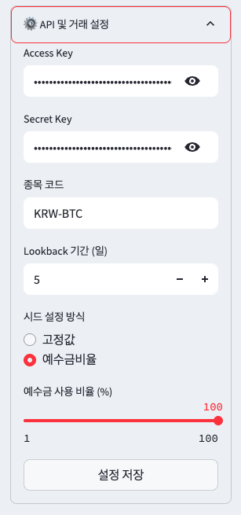

사용 방법🛠️

- 봇이 실행되면 사이드바에서 "⚙️ API 및 거래 설정"을 클릭하세요.
- 업비트 API 키, 종목 코드, lookback 기간 등을 설정하세요. (lookback 기간은 논문에서 x일을 의미합니다.)
- "설정 저장" 버튼을 클릭하고 새로고침하세요.
- 설정이 완료되면 봇이 10분 간격으로 시장 상황을 체크하고 거래 신호를 표시합니다.
- 매매 조건이 부합하면 Bot이 자동으로 매수/매도 주문을 실행합니다.
- 이제 프로그램을 종료하지 말고 유지하세요. 봇을 실행시켜두는 동안 실시간 감시를 합니다. (10분 간격)
- 실행 시 명령프롬프트 등의 화면이 함께 뜨는데 이 것을 종료하면 봇이 종료됩니다.
업비트 API Key 발급 절차
-
업비트 웹사이트(https://upbit.com)에 접속하여 로그인합니다.
-
Open API 관리 페이지 접속 로그인 후, 상단 메뉴에서 [고객센터] → [Open API 안내] → [Open API 사용하기]를 클릭합니다.
-
API 키 권한 설정 필요한 기능에 따라 권한을 선택합니다. 일반적으로는 다음과 같은 권한을 선택합니다: 자산조회, 주문조회, 주문하기 출금 관련 기능은 보안상 주의가 필요하므로, 필요 시에만 선택합니다.
-
허용 IP 주소 등록 API 키를 사용할 IP 주소를 등록해야 합니다. 자신의 공인 IP 주소를 확인하려면 네이버에서 "내 IP"를 검색하거나 https://www.findip.kr 등의 사이트를 이용합니다. IP 주소는 최대 5개까지 등록할 수 있으며, 쉼표(,)로 구분하여 입력합니다.
-
API 키 발급 및 2차 인증 모든 설정을 완료한 후, [Open API Key 발급받기] 버튼을 클릭합니다. 카카오페이나 네이버를 통한 2차 인증을 진행합니다. 인증이 완료되면 Access Key와 Secret Key가 발급됩니다.
Secret Key는 보안상 한 번만 표시되므로, 반드시 안전한 곳에 저장하세요.
⚠️ 주의사항 Secret Key는 재확인이 불가능하므로, 분실 시 API 키를 삭제하고 새로 발급받아야 합니다. API 키는 계정당 최대 10개까지 발급받을 수 있습니다. API 키의 유효 기간은 1년이며, 연장할 수 없습니다. API 키 발급, 수정, 삭제 시에는 2차 인증이 필요합니다.
문제 해결
- 앱이 실행되지 않는 경우: Python이 올바르게 설치되어 있는지 확인하세요.
- API 연결 오류: API 키를 정확하게 입력했는지 확인하세요.
- 패키지 설치 오류: 인터넷 연결을 확인하고 다시 시도하세요.